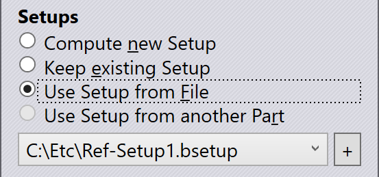
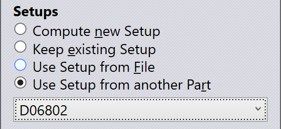
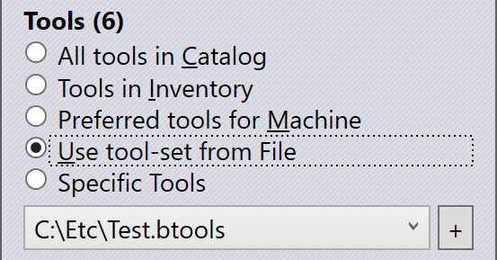
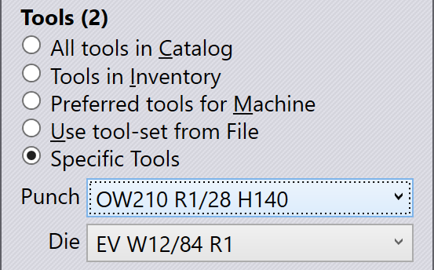
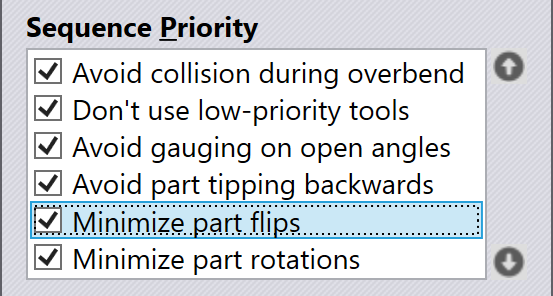
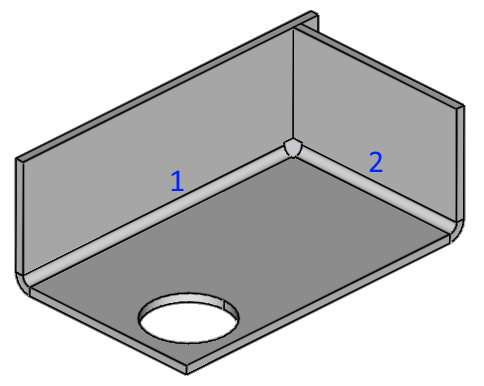
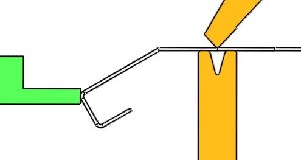

Přepočet řešení
Když stisknete tlačítko B nebo použijete panel Workflow k výpočtu řešení,
TecZone Bend vypočítá program ohýbání pomocí sady výchozích nastavení a parametrů.
Toto řešení můžete přepočítat pomocí různých nastavení kliknutím
na položku Přepočítat
menu v příkazovém řádku. Někdy
je také užitečné dokončit výpočet poté, co jste interaktivně upravili
některé nástroje nebo sekvenci.
Například:
-
Můžete změnit pořadí a požádat TecZone Bend o výpočet nových nastrojovacích míst, aniž byste měnili pořadí.
-
Můžete změnit nastrojovací místa a požádat TecZone Bend o výpočet nového pořadí nebo o zarovnání dílu s nově vytvořenými stanicemi.
-
Můžete vyzkoušet operaci nastrojení s jinou sadou nástrojů nebo zkusit použít již vytvořené nastavení.
Overrides
Tato sekce obsahuje některé přepínače, které můžete použít k přepsání výchozího chování TecZone Bend.
-
Zapněte přepínač Neměnit pořadí, aby se donutil TecZone Bend vypočítat nové řešení beze změny pořadí. TecZone Bend vyzkouší různá nastrojovací místa, polohy dorážení nebo směry vkládání dílů, přičemž pořadí zůstane nezměněno.
-
Pokud je přepínač Bez měření úhlu. zapnutý, TecZone Bend vypočítá řešení, které neprovádí žádná měření úhlů a nepoužívá žádné senzory dorážení (nástroje ACB)
-
Nástroje Ignorovat z souborů GEO/DXF říkajíTecZone Bend, aby byly ignorována nástrojová upozornění, která se často nacházejí v GEO souborech a někdy i v souborech DXF.
Nastavení
Tato část nastavuje strategii pro nastavení nastrojení; ve výchozím nastavení TecZone Bend nastavení vypočítá od začátku, ale pomocí těchto nastavení můžete toto chování změnit.
-
Výchozí nastavení je Vypočítat nové nastavení – TecZone Bend vypočítá nastavení pomocí všech povolených nástrojů (viz část Nástroje níže).
-
Zachovat stávající nastavení říká TecZone Bend, že by neměly být provedeny žádné změny nastavení; program se pokusí zpracovat všechny ohyby pomocí aktuálního nastavení pro daný díl. Pokud některé ohyby vykazují kolize nebo mají nedostatečnou délku nástroje pro zpracování, tyto chyby zůstanou neopravené a lze je zobrazit po procesu přepočítání.

-
Pokud vyberete možnost Použít Setup ze souboru, budete vyzváni k výběru souboru nastavení ohybu (bsetup). Nastavení načtené z tohoto souboru se poté použije pro výpočet; toto nastavení se nemění a nevytvářejí se žádné další stanice. Nastavení, která jste nedávno načetli ze souboru, se zobrazí ve voliči, který se objeví pod touto sekcí, a poté můžete kliknout na tlačítko + vedle tohoto voliče a vybrat jiný soubor nastavení.

-
Možnost Použít nastavení z jiného dílu je k dispozici pouze v případě, že jsou aktuálně otevřeny některé jiné díly a byly nastaveny pro stejný ohraňovací lis. V takovém případě můžete požádat TecZone Bend o použití stejného nastavení jako u jednoho z těchto dalších dílů; zobrazí se volič, který vám umožní vybrat požadovaný díl.
Nástroje
Pokud v sekci výše zvolíte možnost Vypočítat nové nastavení, můžete v sekci Nástroje vybrat seznam ohýbacích nástrojů, které lze použít k výpočtu nového nastavení. Pokud zvolíte jednu z ostatních možností nastavení, tato část nebude k dispozici.
-
Preferované nástroje pro stroj jsou výchozí možností. Pro každý ohraňovací lis si můžete vybrat sadu nástrojů[1] jako preferované nástroje a TecZone Bend bude tyto nástroje používat při obrábění dílu.[2] (Pokud jste pro stroj nenastavili preferované nástroje, TecZone Bend použije všechny nástroje v inventáři jako preferovanou sadu nástrojů pro stroj).
-
Pokud vyberete položku Nástroje v inventáři, TecZone Bend použije všechny nástroje, které jsou k dispozici v inventáři instalace. Pokud jste ještě nenastavili inventář nástrojů, TecZone Bend používá všechny nástroje v katalogu jako svůj inventář.
-
Všechny nástroje v katalogu jsou nejširší výběr nástrojů; TecZone Bend použije všechny nástroje dostupné v katalogu nástrojů výrobce k nalezení řešení. I když to může znamenat, že řešení nemusí být ve skutečnosti proveditelné pro výrobu (s využitím dostupného inventáře), je užitečné pro spekulativní zkoumání toho, jaké nástroje by byly potřebné k výrobě zvláště složitého dílu. (Kromě toho tento režim také říká TecZone Bend, aby předpokládal nekonečnou zásobu kusů – to znamená, že optimální nastrojení jsou vytvořeno za předpokladu, že máte nekonečný počet kusů každé délky).

-
Můžete vytvářet vlastní sady nástrojů a ukládat je do souborů se seznamem nástrojů (btools). Tyto soubory lze poté použít k nastavení nástroje pro daný díl, pokud vyberete možnost Použít sadu nástrojů ze souboru. Když vyberete tuto možnost, budete vyzváni k zadání souboru se seznamem nástrojů a soubory se seznamem nástrojů, které jste nedávno použili, se zobrazí pro snadný výběr. Kliknutím na znaménko + vedle tohoto seznamu můžete vybrat nový seznam nástrojů.
-
Pro co nejpřímější ovládání razníků a matric můžete vybrat možnost Zadání horního a dolního nástroje a poté vybrat přesně ten razník a matrici, které chcete použít.

Priorita pořadí
Při sekvencování ohybů v dílu existuje několik potenciálně protichůdných požadavků.
Například, měl by se TecZone Bend snažit minimalizovat počet otáčení dílu, nebo by
se měl snažit minimalizovat ohyby, kde těžiště dílu leží uvnitř stroje?
Je docela pravděpodobné, že každý operátor může mít jinou sadu pravidel priority, a také
je možné, že různé díly mohou vyžadovat různá nastavení priority. TecZone Bend proto
umožňuje provést přepočet s jiným pořadím priorit pomocí
sekce Priorita pořadí tohoto dialogového okna.

Pomocí tlačítek se šipkou a vpravo můžete pravidla zamíchat; položky v horní části mají vyšší prioritu. Některé z těchto prioritních položek můžete úplně vypnout; tím se stanoví, že je TecZone Bend při rozhodování o pořadí nebude brát v úvahu. (Někdy může vypnutí některých z nich vést k pořadí, které využívá méně nástrojových míst).
-
Vyhněte se kolizím při přehýbání: Aby bylo dosaženo přesnosti úhlu, většina ohybů bude muset být mírně přetáhnuta, aby se kompenzovalo zpětné pružení. Toto pravidlo sekvence říká TecZone Bend, aby se ohýbání provádělo v takovém pořadí, aby bylo možné provést přehyb. Například v dílu níže bychom měli nejprve provést ohyb 1 a poté ohyb 2; opačné pořadí by blokovalo přehyb.

-
Zamezení nástrojů s nižší prioritou: Doporučuje TecZone Bend pokud možno nepoužívat nástroje s nízkou prioritou nebo nástroje, které nejsou v seznamu preferovaných nástrojů.
-
Zamezení doražení u otevřených úhlů: Polohy dorážení by měly být ideálně ve stejné rovině jako osa ohybu a mezi linií ohybu a bodem dorážení by neměly být žádné již zpracované ohyby. Zde je příklad špatného dorážení, kterému se tato pravidla snaží zabránit:

-
Větší délka ramene převážně před čárou ohybu: Zejména u těžkých dílů je užitečné vyhnout se situacím, kdy těžiště dílu leží za linií nástroje. Toto pravidlo se snaží minimalizovat takové situace.[3]
-
Minimalizace obracení dílů: Převrácení dílu nastává, když musí být díl převrácen (po sobě jdoucí ohyby jsou v různých směrech nahoru/dolů).
-
Minimalizace rotace dílů: Otočení dílu znamená, že se díl otočí doleva nebo doprava v horizontální rovině; to je pro obsluhu považováno za snazší než převrácení dílu; výchozí pořadí těchto dvou posledních pravidel upřednostňuje, pokud je to možné, otočení dílu před jeho převrácením.